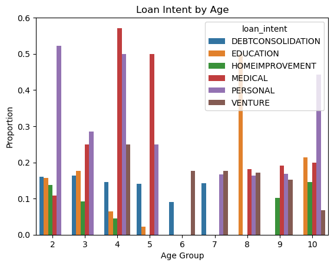

Using a linear score based classifier to maximize bank profits on loans
Author
Ryan Mauney
Published
March 5, 2024
Abstract
Data Exploration
import pandas as pdimport numpy as npimport seaborn as snsimport warningswarnings.filterwarnings('ignore')url ="https://raw.githubusercontent.com/PhilChodrow/ml-notes/main/data/credit-risk/train.csv"df_train = pd.read_csv(url)# make a copy to use and view that datadf_ = df_train.copy()df_
person_age
person_income
person_home_ownership
person_emp_length
loan_intent
loan_grade
loan_amnt
loan_int_rate
loan_status
loan_percent_income
cb_person_default_on_file
cb_person_cred_hist_length
0
25
43200
RENT
NaN
VENTURE
B
1200
9.91
0
0.03
N
4
1
27
98000
RENT
3.0
EDUCATION
C
11750
13.47
0
0.12
Y
6
2
22
36996
RENT
5.0
EDUCATION
A
10000
7.51
0
0.27
N
4
3
24
26000
RENT
2.0
MEDICAL
C
1325
12.87
1
0.05
N
4
4
29
53004
MORTGAGE
2.0
HOMEIMPROVEMENT
A
15000
9.63
0
0.28
N
10
...
...
...
...
...
...
...
...
...
...
...
...
...
26059
36
150000
MORTGAGE
8.0
EDUCATION
A
3000
7.29
0
0.02
N
17
26060
23
48000
RENT
1.0
VENTURE
A
4325
5.42
0
0.09
N
4
26061
22
60000
RENT
0.0
MEDICAL
B
15000
11.71
0
0.25
N
4
26062
30
144000
MORTGAGE
12.0
PERSONAL
C
35000
12.68
0
0.24
N
8
26063
25
60000
RENT
5.0
EDUCATION
A
21450
7.29
1
0.36
N
4
26064 rows × 12 columns
Lets explore how loan intent varies across age groups
# first lets add a column for age groupsdf_["age_group"] = df_["person_age"] //10df_["age_group"][df_["age_group"] >=10 ] =10# Get the counts of each loan intent within each age grouploan_intent_counts = df_.groupby("age_group")["loan_intent"].value_counts().unstack()loan_intent_counts = loan_intent_counts.fillna(0)# Convert counts to proportions relative to each age grouploan_intent_prop = loan_intent_counts.div(loan_intent_counts.sum(axis=1), axis=0)# visualize the trends of loan intent and agetemp = pd.melt(loan_intent_prop)temp["age_group"] =0# rebuild the age group categoryfor i inrange(0, len(temp) +1): temp["age_group"][i] = (i %9) +2ax = sns.barplot(data = temp, x ="age_group", y ="value", hue ="loan_intent")ax.set_xlabel("Age Group")ax.set_ylabel("Proportion")ax.set_title("Loan Intent by Age")
Text(0.5, 1.0, 'Loan Intent by Age')

Debt Consolidation is relatively evently represtend between laoners aged 20 - 59, dropping off in the 70 - 79 age group. Education is of course more highly represented in younger loaners, aged 20 - 39, but is also extremely high in loaners of 100+ years old. In the 100+ year old group around 50% of all loans taken out are for Education. Home Improvement is of course more common in younger loaners, aged 20 - 59. Medical loans takes up a larger proportion of loans in older loaners, with 100% of loans in 90 - 99 year olds being for medical reasons. Personal loans are most common in loaners aged 50 - 89, but are still prevalent in younger loaners. Venture is spread evenly throughout all age groups but never eclipses more than 25% of loans. An important trend to notice is that in age groups 2-4 there is a fairly even distribution of all loan intents. Now lets look at how loan size varies by salary.
While salary (income category) does seem to affect the loan amount, with people having higher salaries taking out larger loans, the higher income categories actually often have lower loan amounts than the lower income categories. This may be a product of people making larger salaries not needing to take out loans as frequently as the middle salaries, which can afford to take out larger loans and pay them back. Let’s also determine what factors seem to be related to higher interest rates.
loan_int_rate loan_grade
5.42 A 488
5.79 A 304
5.99 A 300
6.00 A 1
B 3
...
21.36 F 5
21.74 F 2
22.11 G 2
22.48 G 1
23.22 G 1
Length: 371, dtype: int64
From this snapshot of the larger table, it seems that the high grade loans are associated with the lowest interest rates. Lets explore factors related to loan grades by grouping.
person_income loan_percent_income loan_amnt
loan_grade
A 66058.338922 0.154118 8521.577243
B 66230.171995 0.174897 9980.420673
C 65430.863338 0.169796 9236.762722
D 63966.533172 0.190145 10797.149274
E 70110.929215 0.204234 12805.501931
F 77411.340426 0.217979 14759.042553
G 74609.408163 0.230816 16226.020408
loan_grade
A 66058.338922
B 66230.171995
C 65430.863338
D 63966.533172
E 70110.929215
F 77411.340426
G 74609.408163
Name: person_income, dtype: float64
As we can see from this datatable, loan grade is directly correlated with lower percent of total income. Meaning that higher quality loans, with lower interest rates are associated with loaners whose loan takes up the smallest percent of their total income. This is likely related to the loan taking up a lower percent of their income making it less likely for them to default on the loan. It also seems to follow that people with higher income tend to take out larger loans.
ax = sns.scatterplot(data = temp, x = temp["person_income"], y ="loan_amnt", hue ="loan_percent_income", legend ="brief")ax
Lower income tends to result in smaller loans, which also take up less percent of loaners total income. The darker shades representing higher percent of total income are associated with lower quality loans.